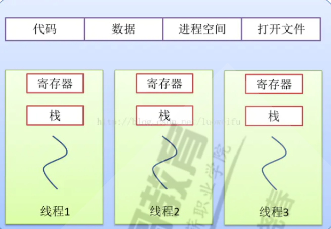
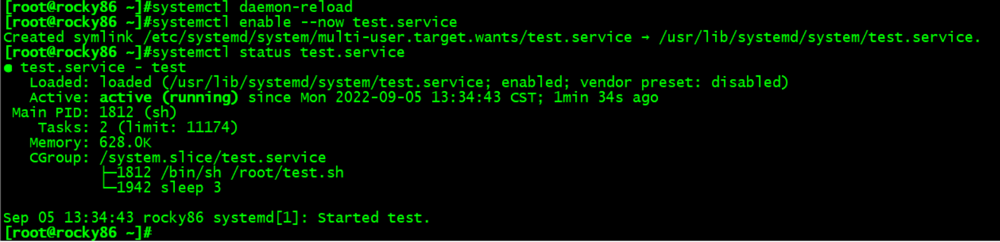
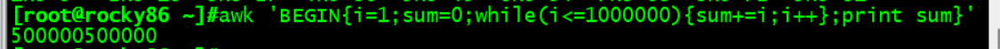
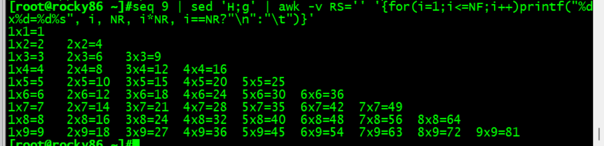
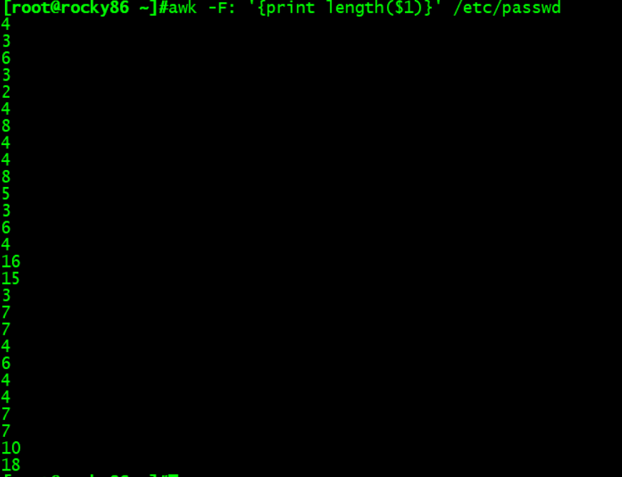
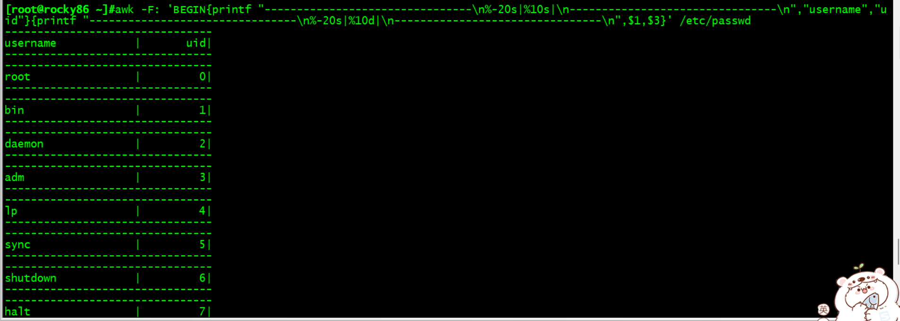

第四周作业
背景
定时任务
一次性任务at命令
*来自at包，依赖atd服务
*at队列存放在/var/spool/at目录，Ubantu存放在/var/spool/cron/atjobs目录中
*执行任务是PATH变量的值和当前定义任务的用户身份一致
at用法
1 | |
at使用范例
1 | |
周期性计划任务cron命令
*来自主程序包cronie，依赖crond服务
系统cron计划任务
1 | |
用户计划任务
1 | |
范例：
1 | |
linux进程和内存

进程（运行中的程序的副本，被载入内存的指令集和，资源分配的单位）：
1：一段供进程执行的程序，该程序可以被多个进程执行。
2：独立的内核堆栈。
3：进程控制快（task_struct：有了这个数据结构，进程才能成为内核调度的一个基本单位接受内核的调度。同时，这个结构还记录着进程所占用的各项资源。
4：独立的存储空间：即拥有专有的用户空间，除了前面的内核空间还有用户空间。
线程
线程是操作系统能够进行运算调度的最小单位。它被包含在进程之中，是进程中的实际运作单位。一条线程指的是进程中一个单一顺序的控制流，一个进程中可以并发多个线程，每条线程并行执行不同的任务。在Unix System V及SunOS中也被称为轻量进程（lightweight processes），但轻量进程更多指内核线程（kernel thread），而把用户线程（user thread）称为线程。进程与线程之间的关系 同一进程中的多条线程将共享该进程中的全部系统资源，如虚拟地址空间，文件描述符和信号处理等等。但同一进程中的多个线程有各自的调用栈（call stack），自己的寄存器环境（register context），自己的线程本地存储（thread-local storage）。
进程和线程的区别
| 比较项 | 进程 | 线程 |
|---|---|---|
| 占用资源 | 初始单位为1M，固定不变 | 初始为2KB，可随需要增大 |
| 调度所属 | 有OS内核完成 | 用户完成 |
| 切换开销 | 涉及模式切换 | 只有三个寄存器的值修改 |
| 性能问题 | 资源占用太高，频繁创建销毁会带来性能问题 | 资源占用小，不会带来严重性能问题 |
| 数据同步 | 需要用锁机制确保数据一直性和可见性 | 不需要锁机制，共享资源，执行效率远高于进程 |
内存
Linux操作系统采用虚拟内存管理技术，使得每个进程都有各自互不干涉的进程地址空间。该空间是块大小为4G的线性虚拟空间，用户所看到和接触到的都是该虚拟地址，无法看到实际的物理内存地址。利用这种虚拟地址不但能起到保护操作系统的效果（用户不能直接访问物理内存），而且更重要的是，用户程序可使用比实际物理内存更大的地址空间。
Linux 的虚拟内存管理：
1、每个进程都有独立的虚拟地址空间，进程访问的虚拟地址并不是真正的物理地址；
2、虚拟地址可通过每个进程上的页表(在每个进程的内核虚拟地址空间)与物理地址进行映射，获得真正物理地址；
3、如果虚拟地址对应物理地址不在物理内存中，则产生缺页中断，真正分配物理地址，同时更新进程的页表；如果此时物理内存已耗尽，则根据内存替换算法淘汰部分页面至物理磁盘中。
linux启动流程
centos6启动

POST–GRUB1阶段MBR446–GRUB1.5MBR之后的空间（提供grub2文件所有分区的文件系统）–GRUB2阶段（grub.conf）–kernel(initramfs.img)–根分区–/sbin/init–/etc/inittab–/etc/rc.sysinit–/etc/rc.d/rc–/etc/rcN.d/K,S(/etc/init.d/)–/etc/rc.local–login登录
1.加载BIOS的硬件信息，获取第一个启动设备
2.读取第一个启动设备MBR的引导加载程序(grub)的启动信息
3.加载核心操作系统的核心信息，核心开始解压缩，并尝试驱动所有的硬件设备
4.核心执行init程序，并获取默认的运行信息
5.init程序执行/etc/rc.d/rc.sysinit文件
6.启动核心的外挂模块
7.init执行运行的各个批处理文件(scripts)
8.init执行/etc/rc.d/rc.local
9.执行/bin/login程序，等待用户登录
10.登录之后开始以Shell控制主机
systemd服务
实现目标：systemd服务定时去其他服务器上检查/tmp/下文件的个数，如果发现数量有变化就记录变化情况到文件中。
从centos7以后开始用systemd代替init进程，系统启动和服务器守护进程管理器，负责在系统启动或运行时，集火系统资源，服务器进程和其他进程
在/lib/systemd/system/目录下写服务文件test.service
1 | |
服务文件调用/root/test.sh脚本
1 | |
加载配置文件
1 | |
开启服务
1 | |
查看服务状态
1 | |

linux内核编译安装
查看当前内核版本
1 | |
下载所需的内核
1 | |
安装内核编译所需要的依赖
1 | |
运行menuconfig程序，选择需要的编译参数
1 | |
进入UI界面，参数不用改，切换到save直接保存，尔后按两下Esc退出。
编译内核
1 | |
-j2参数根据个人自己的计算机进行设置，注意-j后面的数字不要超过你电脑的核心数就行了。
这是一个漫长的过程，还有可能会出现错误，耐心的等待吧。注意保证你的电脑网络的畅通以及centos系统有足够大的硬盘空间。
如果编译完成并没有报错的话就可以进行下一步的编译了。
1 | |
使用grubby切换内核
grubby是一个用于更新和显示有关各种体系结构特定的引导程序的配置文件信息的命令行工具。 它主要设计用于安装新内核并需要查找有关当前引导环境的信息的脚本，同时也可以对启动内核的各项信息参数进行修改。grubby已经默认安装在centos8中，如果系统中没有grubby我们也可以通过yum进行安装grubby工具。
1 | |
查看当前系统默认启动的内核
1 | |
重启系统，感受新内核给你带来的欢乐吧。
awk命令
awk是一个强大的文本分析工具，相对于grep的查找，sed的编辑，awk在其对数据分析并生成报告时，显得尤为强大。简单来说awk就是把文件逐行的读入，以空格为默认分隔符将每行切片，切开的部分再进行各种分析处理。
示例1：计算1加到1000000方法
1 | |
用awk速度是最快的

示例2：打印九九乘法表：
1 | |
AWK用于格式化输出

示例3：统计用户名长度
1 | |

示例4：格式化打印 username和uid
1 | |

示例5：统计tcp不同状态及出现次数
1 | |
本博客所有文章除特别声明外，均采用 CC BY-SA 4.0 协议 ，转载请注明出处！